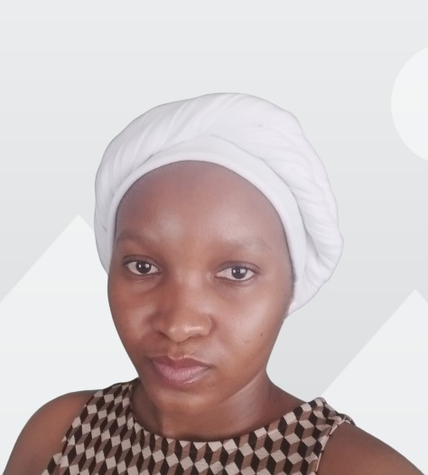

About Me
I am an experienced IT Support professional with over three years of hands-on experience providing reliable desktop, system, and user support in fast-paced environments. My role has strengthened my ability to diagnose and resolve hardware, software, and network issues efficiently, while delivering excellent customer service. I have worked extensively with Microsoft 365, Azure Active Directory, endpoint security, and hybrid environments, ensuring smooth day-to-day operations for end users.
Alongside my support background, I am an aspiring Software Developer with a strong foundation in full-stack development. I have practical experience using technologies such as HTML, CSS, JavaScript, Java, React, Spring Boot, and Bootstrap. This blend of support and development allows me to understand systems holistically—both from the user’s perspective and the backend logic that powers applications.
I am deeply passionate about continuous learning and professional growth. I actively upskill through formal education, certifications, and hands-on projects, currently expanding my knowledge in data science, Python, and advanced computer science concepts. I enjoy exploring new technologies and staying current with industry trends to remain adaptable in a constantly evolving tech landscape.
Skills

- Verson Control Git/Github
- Using W3C validation tools
- Using sementic tags: Header, Footer, Section
Projects
- Personal Profile
- Landing page project
Contact Me
Tell: 079 805 6684 | Email details| LinkedIn